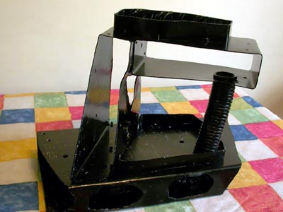

Пластиковый грот в аквариуме
Грот лёгкий. Объём воды не отнимает. Имеет множество укрытий для рыб, особенно для тех, которые любят тень и тесноту. Тень и тесноту любят большинство сомов, которые целыми днями спят. Аквариумисты делают самодельные укрытия для рыбок из кокосов, камней, кусков труб.
Несколько раз я делал гроты для обоих своих аквариумов (100 и 200 литров). Сначала сделал грот из склеенных камней, потом из связанных кокосов. Самая удачная конструкция получилась из пластика. Это были гроты из прямоугольных и круглых пластиковых труб, соединённых пластиковыми стяжками. Можно использовать и герметик. Цвет должен быть чёрный, чтобы не было заметно погрешностей наклеивания камушков.

Лучше применять чёрный пластик, но я покрасил нитрокраской белые трубы. Масляную и другие долго сохнущие краски лучше не использовать, так как они будут выделять вредные вещества в воду.

Размер грота 40x30x20 см.
Конструкция из тонкого пластика безопасная в отличие от тяжёлого грота из камней, который загромождает аквариум и может даже разбить стекло при неудачном размещении.
Видимая часть поверхности грота покрыта камушками из аквариума, которые сначала надо вымыть, прокипятить, и высушить (в духовке), чтобы улучшить схватываемость с клеем. В качестве клея использовался прозрачный аквариумный герметик.

Невидимые части грота обклеивать камушками не нужно. Я думаю, рыбам даже нравятся гладкие стенки внутри грота.
Наконец, грот для аквариума сделан своими руками, помещён в воду и украшен растениями. Цихлиды и сомы постоянно живут внутри грота. Даже барбусы туда заплывают.

Самка цихлиды попугая
пасёт мальков около грота
Растения посажены в специально сделанные ёмкости с грунтом. Можно положить в грунт кусочек глины в качестве удобрения. Некоторые растения сами цепляются за камушки и грот красиво обрастает со всех сторон. Красиво смотрится яванский мох . Его можно прикрепить к шершавой поверхности зелёной ниткой.
Валиснерию можно вставить в дырочки в пластмассе. Потом она сама найдёт пути распространения и закрепления на поверхности грота.
В этом 100 литровом аквариуме грот уже сильно зарос растениями. Валиснерия зацепилась за шершавую поверхность. В гроте замечательно вывелись молодые цихлиды и барбусы. Интересно, что цихлиды отложили икру внутри пластиковой гофротрубы - в самом тесном месте грота.